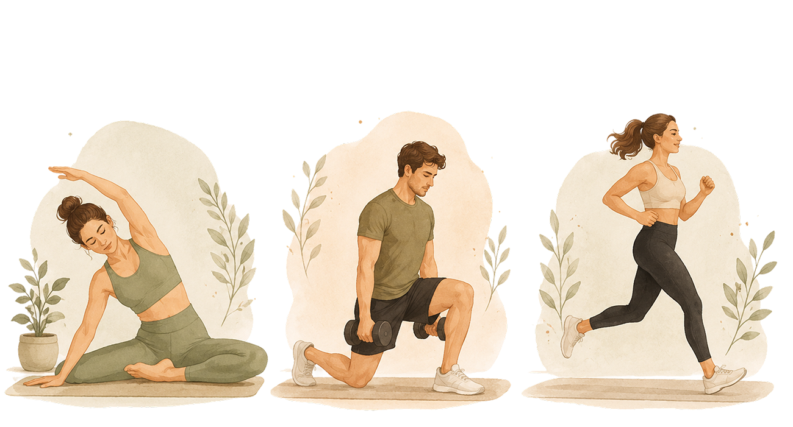
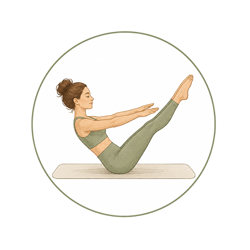
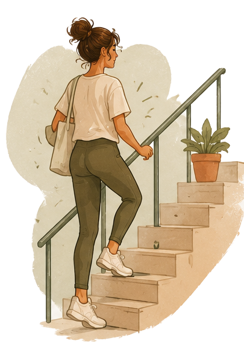
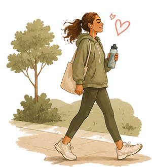
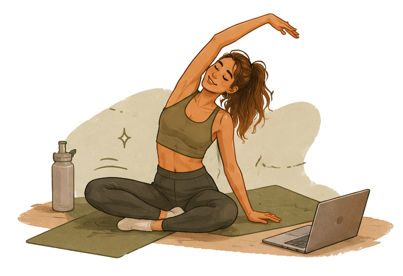

אימון אירובי
סיבולת ואנרגיהפעילויות כמו הליכה מהירה, ריצה, רכיבה על אופניים או ריקוד משפרות את סיבולת הלב והריאות ותורמות לתחושת חיות ואנרגיה.


לא צריך לרוץ מרתון או לבלות שעות בחדר הכושר כדי ליהנות מהיתרונות של פעילות גופנית. כל תנועה, גם הקטנה ביותר, תורמת לבריאות שלנו: הליכה קצרה, עלייה במדרגות, מתיחות בין משימות או אימון מלא – כולם מסייעים לחיזוק הגוף, לשיפור מצב הרוח ולהעלאת רמות האנרגיה במהלך היום.
פעילות גופנית קבועה תורמת לחיזוק השרירים והעצמות, משפרת את סיבולת הלב והריאות, מסייעת להפחתת מתחים ותומכת באורח חיים בריא ומאוזן.
פעילויות כמו הליכה מהירה, ריצה, רכיבה על אופניים או ריקוד משפרות את סיבולת הלב והריאות ותורמות לתחושת חיות ואנרגיה.

אימוני כוח מסייעים לחיזוק השרירים, העצמות והמפרקים, ותומכים ביכולת התפקודית היומיומית לאורך זמן.

פילאטיס מתמקד בחיזוק שרירי הליבה, שיפור היציבה והגדלת הגמישות, ומתאים לשילוב בשגרה רגועה ומאוזנת.
לא כל יום מאפשר לעצור לאימון מסודר, וזה בסדר. גם פעולות קטנות לאורך היום יכולות להצטבר להשפעה משמעותית על הבריאות.

עלייה במדרגות היא דרך פשוטה להוסיף יותר תנועה לשגרה.

אפילו 10–15 דקות של הליכה בין משימות יכולות לרענן את הגוף והמחשבה.

במקום לשבת בזמן שיחת טלפון, נסו לקום ולהסתובב.

סידור הבית, ניקיון וגינון הם גם פעילות גופנית.

כמה דקות של מתיחות במהלך היום יכולות להפחית עומס ולשפר את ההרגשה.

לפעמים שתי דקות של מוזיקה ותנועה יכולות לעשות פלאים לאנרגיה ולמצב הרוח.
תנועה לא חייבת להיות מושלמת כדי להיות משמעותית.
כל צעד קטן הוא השקעה בבריאות שלכם.